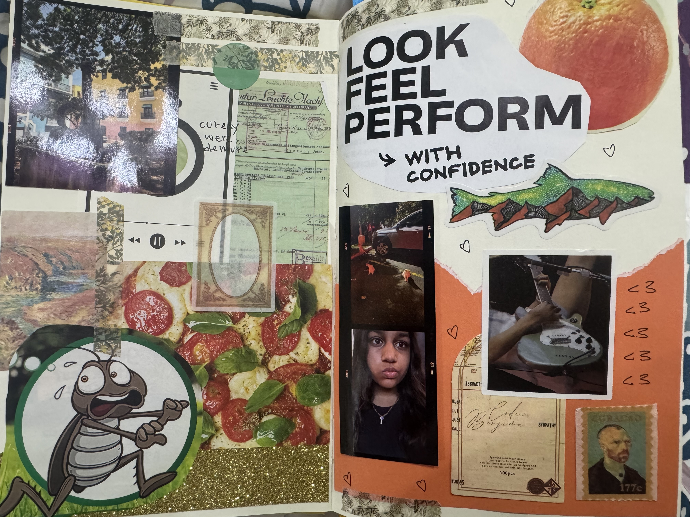
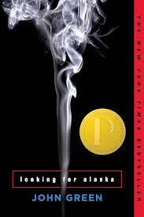
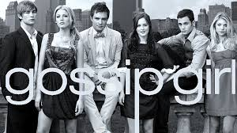

Sunset Walks
Evening skies + music = perfect peace.
I took this during one of my sidequests with my new friends at NHA. The pink sky made everything feel calm and happy again.

Traveling
New cultures, food and love the fun!!
I love visiting places, and a goal is to travel the world.

Listening to Music
Soundtracks that feel like me.
I am huge on RNB and Pop. A mix of comfort songs and new finds that make me feel like myself again.

Journaling
Crafting, scrapbooking, saving memories.
This is my favorite way to unwind and reflect. I love adding little mementos and doodles to make each page special.

Dogs
Goldendoodles are allllll meeeee.
I am obsessed with dogs, especially goldendoodles! Their fluffy fur and sweet nature always brighten my day.

Red
My favorite color.
I don’t like wearing red clothes, but I love seeing red in nature, like roses and sunsets. Also, I love red nails!

Looking for Alaska
By John Green. Favorite book.
I love the plot on the boarding school life, and just a perfect story all around (P.S. I cried so much).

Gossip Girl
Best show out there tbh.
I binged this show and it was so worth it, very good ending!